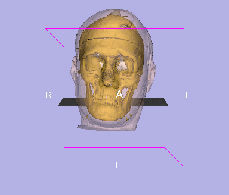

3D Slicer User's Manual
This document is intend to assist the users of the 3D slicer. The "slicer"
is a sophisticated image viewing and image processing tool for viewing
medical images in a variety of image formats such as this CT image:
and then applying the slicer's image processing tools to create more
sophistcated 3D scenes such as this:

The intent is for this manual to complement and enhance the the information
provided in A Practical Guide to the 3D Slicer. It is reccommended that the user read
the practical guide prior to reading this documemt.